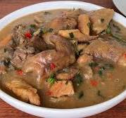

Nsala Soup

Description
Nsala Soup, a creamy "White soup" from Nigeria's Igbo people, is a culinary gem with
unparalleled richness. Simmered gently with catfish or tilapia, indigenous herbs, and aromatic
spices like utazi and uziza, this both creates a symphony of comforting flavors. its subtle heat
and delicate balance transcend mere sustenance, embodying generation of culinary heritage.
When served with staples like fufu or pounded yam, Nsala Soup delights the senses, inviting
diners to savor its warmth and depth. A beloved delicacy, it remains a timeless symbol of West African cuisine.
Ingredients
Here is a list of ingredients typically used in preparing Nsala Soup:
- Fresh fish (such as catfish or tilapia), cut into pieces
- Ground crayfish (dried and ground crayfish)
- fresh or dried utazi leaves, chopped.
- Pepper,(such as Scotch bonnet or habanero), to taste
- Garlic, minced
- Ginger, minced
- Seasoning cubes or powder(such as maggi or Knorr), to taste
- Salt, to taste
- Water or fish stock
- Palm oil.
Steps
- Prepare the fish:
- Clean the fish thoroughly, removing scales and innards.
- Cut the fish into pieces and set aside.
- Prepare the Ingredients:
- Chop the onion, utazi leaves, and uziza leaves.
- Mince the garlic and ginger.
- Measure out the ground crayfish and pepper.
- Boil the Fish:
- In a pot, add the fish pieces and cover with water or fish stock.
- Add chopped onion, garlic, ginger, and seasoning cubes or powder.
- Bring the pot to a boil and then reduce the heat to simmer until the fish is cooked through.
- This usually takes about 10-15 minutes, depending on the size of the fish pieces.
- Prepare the Pepper Paste:
- In a blender or food processor, combine the chopped pepper with a small amount of water and blend into a smooth paste.
- Make the Soup Base:
- Once the fish is cooked, remove it from the pot and set it aside.
- In the same pot, add the palm oil and heat it up.
- Add the blended pepper paste and cook for a few minutes until the raw smell of the pepper is gone.
- Add Seasonings and Crayfish:
- Stir in the ground crayfish and season with salt and additional seasoning cubes or powder, if needed. Adjust the seasoning to taste.
- Add Fish and Utazi Leaves:
- Return the cooked fish to the pot with the pepper base.
- Add the chopped utazi leaves to the pot.
- Simmer:
- Allow the soup to simmer for another 5-10 minutes to allow flavors to meld together and the leaves to soften.
- Serve:
- Once the soup is ready, serve hot with your choice of side dish, such as fufu or pounded yam.